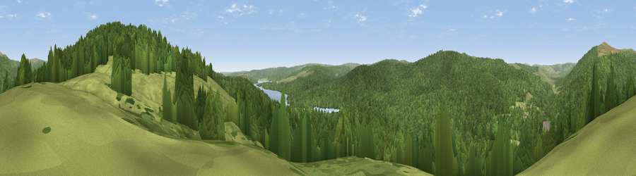

Viewpoint c11858_7278
#20830 in England · top 46% of its area beats it · —Where it is
The exact computed spot (NY 63925 92925). Click the marker for map links.
The view, rendered

A 360° render of this exact spot computed from the terrain model, tree cover and land cover — summer colours, afternoon light, calibrated against photographs of famous viewpoints. Real trees, hedges and buildings will differ in detail.
The panorama
Grey silhouette: terrain skyline in each direction (720 bearings, Earth curvature and refraction included). Dashed green: skyline with trees (+15 m) and buildings (+8 m) as obstacles. Blue strip: how far the ground is visible on each bearing.
Where the view opens
Wedge length = distance to the farthest visible ground on that bearing (vegetation-aware). Rings at 10, 25 and 50 km.
What fills the view
74% woodland · 24% grassland · 2% water ·
Angular shares of the visible panorama (visual magnitude), not map area. Landscape diversity 0.29 (0–1 Shannon).
Key numbers
More beautiful places nearby
The staircase of upgrades: each row has a higher view potential than everything closer. Driving times are estimates from straight-line distance, calibrated against real road routing — check an actual route before setting out.
| Place | Direction | Drive | Score |
|---|---|---|---|
| Viewpoint c11882_7312 | NE · 2 km | ~5 min | 57.6 |
| Pike Knowe | NE · 2 km | ~6 min | 71.2 |
| Deadwater Fell | NNW · 4 km | ~10 min | 79.4 |
| Viewpoint c11995_7247 | NNW · 7 km | ~15 min | 82.1 |
| Viewpoint c12273_7856 | NE · 35 km | ~54 min | 83.7 |
| Viewpoint c12396_7887 | NE · 41 km | ~60 min | 85.7 |
| Viewpoint near Kirknewton | NE · 47 km | ~67 min | 86.1 |
| Viewpoint near Chillingham | NE · 55 km | ~76 min | 88.1 |
55.22921, -2.56872 · source: screening · position refined by local search. Computed location — check access rights before visiting.